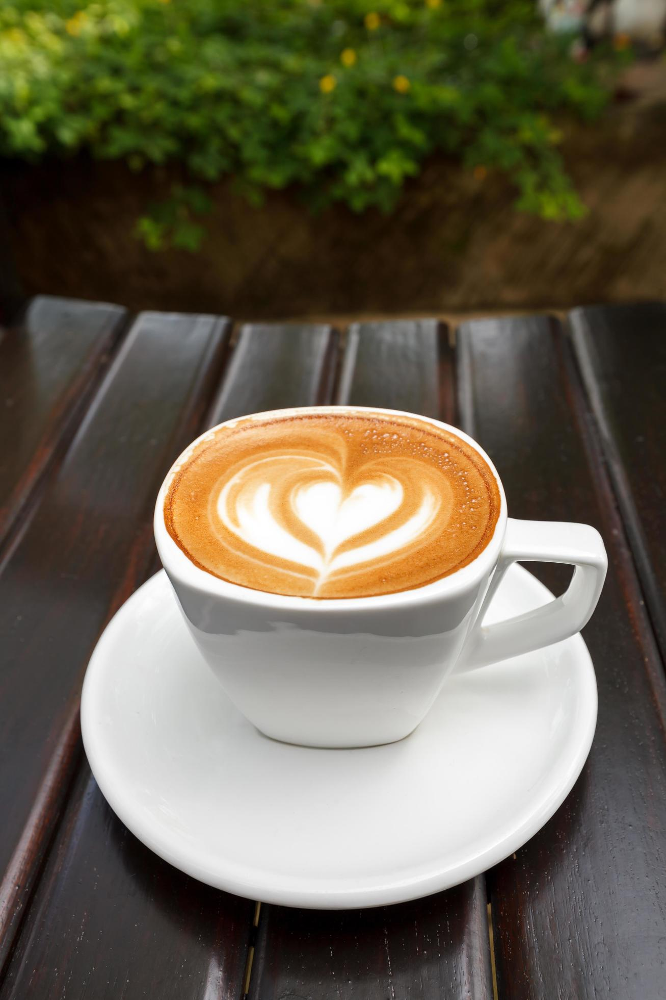

19/10/2026 - El café nace en las alturas de los Andes y llega a tu taza después de un largo viaje. Cada grano guarda el esfuerzo de las familias cafetaleras y el sabor del lugar donde creció. Hoy te contamos por qué tomar una buena taza es un pequeño ritual que cambia el día.

Un buen café empieza con granos frescos, molienda adecuada y agua a la temperatura correcta. Prueba métodos distintos, como la prensa francesa, el filtrado o el espresso, y descubre notas de chocolate, frutas y caramelo. Compartir una taza con alguien es la mejor excusa para conversar sin prisa.
En fifty coffees seleccionamos café de origen peruano y lo tostamos en pequeños lotes para conservar su aroma. Te invitamos a recorrer nuestra galería y a ver los videos que preparamos sobre el cultivo y la preparación del café.